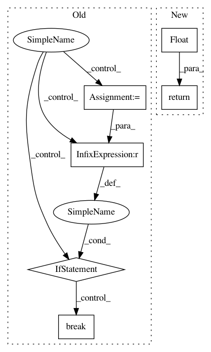

04cd555be76efc7baced753c751c4257d41eb75d,EvalMetrics.py,,ErrorRateAt95Recall,#Any#Any#,10
Before Change
for label, score in sorted_scores:
count += 1
if label == 1:
tp += 1
if tp >= n_thresh:
break
return float(count - tp) / count
After Change
FP = np.sum(labels[:threshold_index] == 0) // Below threshold (i.e., labelled positive), but should be negative
TN = np.sum(labels[threshold_index:] == 0) // Above threshold (i.e., labelled negative), and should be negative
return float(FP) / float(FP + TN)
"""import operator
def ErrorRateAt95Recall(labels, scores):
In pattern: SUPERPATTERN
Frequency: 3
Non-data size: 6
Instances
Project Name: DagnyT/hardnet
Commit Name: 04cd555be76efc7baced753c751c4257d41eb75d
Time: 2017-07-27
Author: ducha.aiki@gmail.com
File Name: EvalMetrics.py
Class Name:
Method Name: ErrorRateAt95Recall
Project Name: OpenMined/PySyft
Commit Name: 8d9e7975d0bf840b8061b7a60ef6385fd9a2fa5a
Time: 2020-07-10
Author: hericles.me@gmail.com
File Name: syft/workers/static_fl_worker.py
Class Name: StaticFLWorker
Method Name: _get_upload_speed
Project Name: OpenMined/PySyft
Commit Name: 8d9e7975d0bf840b8061b7a60ef6385fd9a2fa5a
Time: 2020-07-10
Author: hericles.me@gmail.com
File Name: syft/workers/static_fl_worker.py
Class Name: StaticFLWorker
Method Name: _get_download_speed